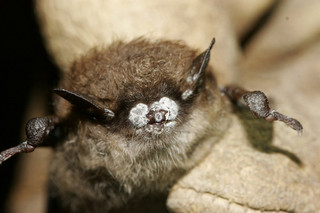
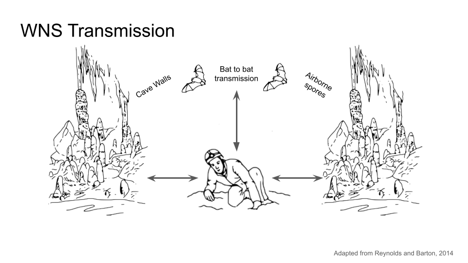
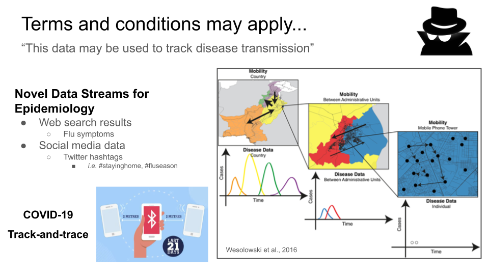
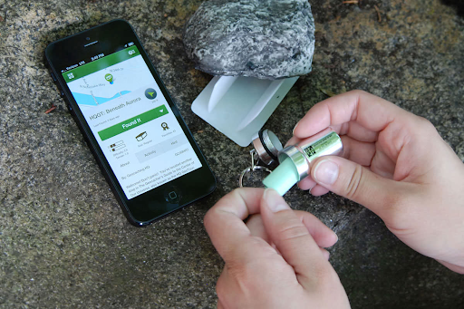
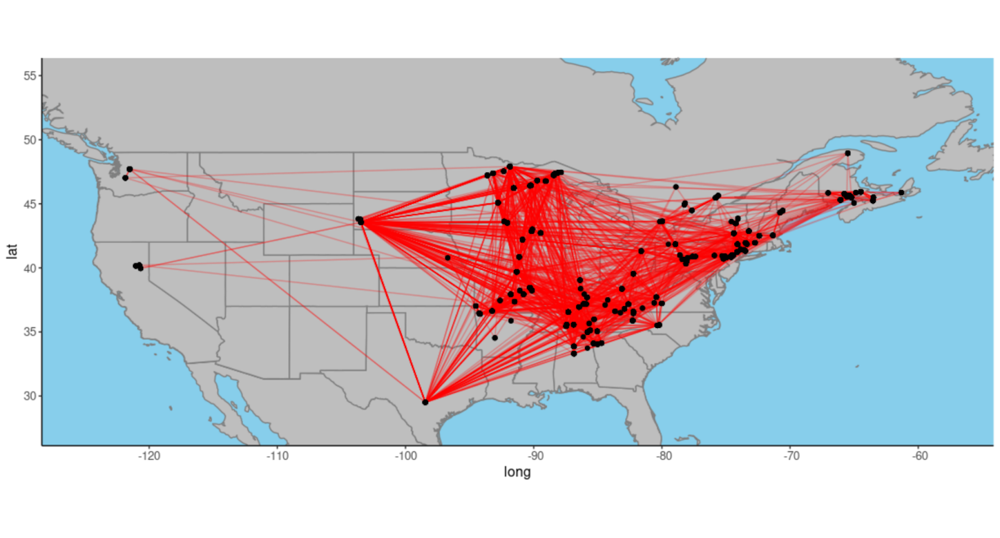
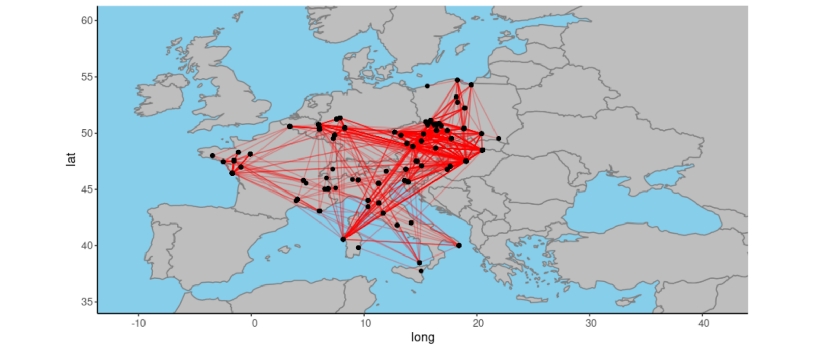

Does Human Activity Contribute to the Spread of White-Nose Syndrome?
Published:
The Problem
 White-nose Syndrome is an ongoing fungal epizootic caused by epidermal infections of the fungus, Pseudogymnoascus destructans (Pd), affecting multiple bat species in North America. Emerging sometime around 2008 in New York State, White-nose Syndrome has spread via clonal reproduction through North-Eastern United States and Canada provinces.

What remains relatively unknown is how much human activity has the potential to influence the spread of White-nose Syndrome. Our influence on the transmission of Pd has never been quantitatively measured at bat hibernacula.
So how can we get our hands on the visitation rates for humans visiting caves in North America and Europe? It’s not like there is a single place where these numbers are recorded. Only caves that serve as tourist destinations might have these numbers, and this represents a very small proportion of the bats impacted by White-nose Syndrome in North America. Since most natural roosts likely exist on private land (not government owned/operated), it seems like this information would be impossible to obtain, right?
The Application of Novel Data Streams to Problems in Disease Ecology

So called, “Novel Data Streams” are becoming more widely used in epidemiology. In particular, they have recently been applied to tracking the spread of influenza and other infectious diseases in human populations.
What if we could use novel data streams to understand how human activity has the potential to influence the spread of White-nose Syndrome? What sources would have useful information for this purpose?
Geocaching
Consider the activity of “Geocaching”, which, simply put, is kind of a massively social scavenger hunt. There are around 4 million active geocaches worldwide. Many of these users are extremely active, sometimes logging hundreds or thousands of “finds”. Users of geocaching.com can search for “caches” hidden by other users, and even hide their own caches for others to find. make posts with clues to Here we use online Geocaching records at sampling sites as a proxy for human activity in these areas. 
This is an extremely exciting data source to use for our purpose here, there are several pieces of information tied to each cache:
- All “finds” of a cache are logged
- the coordinated, date, and unique user ID
- We can link a user’s activity across different sites
- allows us to create a network of human traffic between different caves
These records can be used as a proxy for human activity at natural sites!
Challenges
The main challenge here is filtering out the sites that are probably used by roosting bats, and those that are not. Although we pre-selected sites that had the word “cave” or “mine” in the description, the vast majority of these Geocaching sites might not represent true hibernacula for bats.
How do we know that the sites we are sampling are reliable?
Luckily, we can collect additional data on the descriptions of each site by the user, including pictures. We don’t necessary have to do manual confirmation for each site, we developed a filtering strategy based on the presence of key words in these descriptions.
But this information is also fraught with issues – in english, these descriptions tend to use the word “bat” in many different contexts. So we can’t just asssume that the presence of the word “bat” is always used in the context of a site being proper hibernacula for bats. What we can do is determine a combination of keywords that can be used to determine which sites correspond with the right types of habitat for bats. We tested this on a subset of caves which are known to overlap with known bat hibernaculua. A combination of keywords “flashlight”,”cave”,”mine”,”bat”, and “ore” or “mineral” seemed to work best.
Multilingual Geocachers
In Europe, there is an additional challenge to filtering: posts are written in a variety of different languages! We translated this keyword set into 8 of the most widely represented languages in Europe to solve this problem.
Additional Issues with Tracking White-Nose Syndrome
There a couple of other sicky points that I don’t have time to completely address in this post. But these issues will need to be addressed before publiscation!
A non-exhaustive list:
- What are occupancy rates of bats at these sites?
- Not all human visits are a potential risk for transmission.
- What factors impact the spread of the Pd fungal cells between caves?
- Incorporating the (viable) spore load, decay of viability with time, etc., for Pd spores
Some Preliminary Results
Data Collection
We were able to scrape a large collection of Geocaching records from geocaching.com. We used the Geocaching API to collect this data. To avoid having to scrape all of the sites across North America and Europe, we restricted our search to only the areas where White-nose Syndrome has been recorded in North America and Europe. We also limited our search to sites that had the word “cave” or “mine” in their description.
| Region | Number of Sites | Number of Unique Users |
|---|---|---|
| North America | 184 | 14 215 |
| Europe | 92 | 12 559 |
 \
The users that visit these sites move around alot more than expected! About 15% of users visit another cave geocache within a month. And most of these visits are to sites that are relatively close by/

But what are the implications of users that travel long distances between different caves?
What proportion of users visit caves in Europe?
About 94 users (0.4%) in the total dataset have been visiting geocaching sites on different continents. This includes 2 individual users who logged at European cave…before entering a North American cave within 30 days
Why is this length of time significant? Well, in one or my previous papers, we demonstrated that spores of Pd, which is a psychrophilic pathogen, can survive for 30 days at 23C. This means that spores could potentially be spread between caves, if visits happen within a relatively small time frame.

Our results suggest that sites with a greater number of unique visitors are correlated with higher genotype diversity at these caves. Considering the impact that humans could have on the spread of White-nose Syndrome, further precautions need to be made to prevent and manage the further spread of White-nose Syndrome.